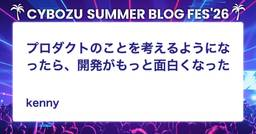
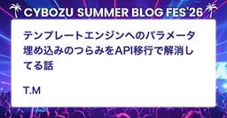

Cybozu Inside Out | サイボウズエンジニアのブログ
https://blog.cybozu.io/
サイボウズ株式会社、サイボウズ・ラボ株式会社のエンジニアが提供する技術ブログです。製品やサービスの開発、運用で得た技術情報やエンジニアの活動、採用情報などをお届けします。
フィード

変化への柔軟性と変わらない本質〜2026年エンジニア新人研修の裏側〜
Cybozu Inside Out | サイボウズエンジニアのブログ
この記事は、CYBOZU SUMMER BLOG FES '26の記事です。 はじめに こんにちは。開発本部でオンボーディングを担当している久宗（@tignyax）です。 前回は「新卒目線による記事」をご紹介しましたが、 今回は運営目線による記事として「2026年のエンジニア新人研修の裏側」をご紹介したいと思います！ AIの急速な発展や新卒メンバーのバックグラウンドの変化に伴い、事前に設計した研修カリキュラムだけでは対応しきれない場面が増えてきています。 この記事では、今年の試行錯誤と、そこから得た「変化への柔軟性と、変わらない本質」についての学びを共有します。 研修の目的と目指す状態 研修の…
8時間前
React移行を機にグラフ描画ロジックを整理した話
Cybozu Inside Out | サイボウズエンジニアのブログ
この記事は、CYBOZU SUMMER BLOG FES '26の記事です。 こんにちは、サイボウズでプロダクトエンジニアをしている大塚です。 サイボウズでは現在、kintoneのフロントエンドをGoogle Closure ToolsからReactへ移行する刷新プロジェクトを進めています。 私はkintoneアプリに関連する画面のReact移行を担当する「ババロア」チームに所属し、グラフ詳細画面のReact移行にも深く関わりました。 この記事では、その中でグラフ描画に関して行った工夫を紹介します。 刷新前の構成と課題 グラフ詳細画面では、棒グラフ・折れ線グラフ・円グラフなどのグラフ形式の描画…
13時間前
ここがハオ（好）！キャリア入社4か月目が語る、"チームワーク"のサイボウズ一問一答
Cybozu Inside Out | サイボウズエンジニアのブログ
この記事は、CYBOZU SUMMER BLOG FES '26の記事です。 はじめまして！2026年4月にキャリア入社しました、開発本部 kintoneプラットフォーム副本部の いこ（@ico_penjelly） と申します。 入社してもうすぐ4か月、長かったような短かったような……その中で私なりに色々体験したり考えたことをまとめるためにも、サイボウズに入って感じたことを一問一答形式で書いていきます！ 「サイボウズってどんな会社？」が少しでも伝われば嬉しいです。 ※あくまでキャリア入社4か月目時点での個人的な感想です。完全に主観の話となりますのであらかじめご了承ください。 今回答える質問はこ…
14時間前

新卒QAエンジニア 1年目の仕事を振り返る 1
1
Cybozu Inside Out | サイボウズエンジニアのブログ
この記事は、CYBOZU SUMMER BLOG FES '26の記事です。 はじめに こんにちは！サイボウズでQA(品質保証)エンジニアをしているすずりん🦒です。 入社して1年とちょっと、チームに配属されてからは丸1年が経ちました。 現在は、Garoonの品質にかかわる活動を担当するSpicaチームに所属し、品質基準の見直しや社内外から報告された不具合の再現調査・不具合登録に取り組んでいます。 先日、先輩たちとのランチで「普段の業務についてのブログってあんまりないよね」という話になりました。 思い返せば私自身、入社前は1年後にどんな業務をしているか全く想像できていませんでした。 ということで…
1日前
kintoneパフォーマンス改善の裏側 - 相関サブクエリをsemijoinで解決する
Cybozu Inside Out | サイボウズエンジニアのブログ
この記事は、CYBOZU SUMMER BLOG FES '26の記事です。 こんにちは。kintone開発チームのプロダクトエンジニアの宇都宮です。主にkintoneのバックエンドを開発しています。 本題に入る前に、この記事に出てくるkintoneの用語を簡単に説明します。kintoneでは、ユーザーが「アプリ」と呼ばれる業務アプリケーションをノーコードで作れます。アプリはデータベースのテーブルに近い存在で、そこに登録される1件1件のデータが「レコード」です。RDBでいう行にあたります。登録したレコードは「一覧」と呼ばれる画面で確認でき、ユーザーはここで条件を指定してレコードを絞り込んだり、…
1日前

スプリントゴールを当たり前にする
Cybozu Inside Out | サイボウズエンジニアのブログ
この記事は、CYBOZU SUMMER BLOG FES '26の記事です。 はじめに こんにちは！スクラムマスターのOhishiです。 私は今、iOSのkintoneモバイルアプリを開発するチームに所属しています。 このチームでうまく運用されているなと感じるのがスプリントゴールの設定です。 今回の記事では、私の所属するモバイルアプリチームがどのようなことを意識してスプリントゴールを設定し、運用しているかをご紹介します。 スプリントゴールとは スプリントゴールは、スプリントで目指す唯一の目的です。 開発チームはスプリントゴールの達成に向けて必要な作業を行います。 スプリントプランニングで決める…
2日前
kintone.com プラットフォームを提供 ~ われら Yakumo にござる
Cybozu Inside Out | サイボウズエンジニアのブログ
こんにちは、kintone.com を提供する Yakumo チームの rin（@rindrics.com）です。 当チームに関する記事は、これまでにもこの Cybozu Inside Out からカテゴリー "Yakumo" で発表されてきたのですが、実は Yakumo チーム自身については紹介されたことがなかったようです。 ちょうど先日、当社におけるプラットフォームエンジニアリング部の誕生・現状・展望が語られたことを踏まえて、本記事ではその下位チームとしての Yakumo チームとその役割について紹介します。 目次 Yakumo チームとプラットフォームエンジニアリング部との関係 社内外に…
2日前

プロダクトのことを考えるようになったら、開発がもっと面白くなった
Cybozu Inside Out | サイボウズエンジニアのブログ
この記事は、CYBOZU SUMMER BLOG FES '26の記事です。 プロダクトのことを考えるようになったら、開発がもっと面白くなった こんにちは！kintoneのダッシュボード開発チームでエンジニアリングマネージャー(EM)をしている kenny です。 私は、2025年4月のダッシュボード開発のチーム発足時にEMになりました。今回は、EMになってから今日までの試行錯誤と学びを振り返ってみようと思います。 つくるものを検討するという仕事 ダッシュボード開発チームでは、何をつくるかの検討に深く関わっていくことができます。最初から何をつくるかが決まっていてそれが渡されるのではなく、プロダ…
2日前

AndroidのWebViewでJavascriptInterfaceを使うときの落とし穴
Cybozu Inside Out | サイボウズエンジニアのブログ
この記事は、CYBOZU SUMMER BLOG FES '26の記事です。 はじめに 新卒2年目でkintone Androidチームに所属している市村です。 本記事では、最近のkintone Androidチームでどのようなことをしているかの紹介と、そうした業務の中で向き合った問題の一例を紹介します。 モバイルアプリ開発を越境してWeb領域へ介入 kintoneのモバイルアプリはWeb側のモバイルビュー表示をベースとしている、いわゆるWebViewのアプリです。 Web実装だけでは手の届かない部分を、Androidアプリの機能として部分的に実装し、モバイル端末での利用体験向上につなげていま…
3日前

テンプレートエンジンへのパラメータ埋め込みのつらみをAPI移行で解消してる話
Cybozu Inside Out | サイボウズエンジニアのブログ
この記事は、CYBOZU SUMMER BLOG FES '26の記事です。 こんにちは、kintoneのシステム管理/外部連携チームでProduct EngineerをしているT.Mです！ 本記事では、日々の機能開発と並行して進めているコード改善の取り組みの一つとして、サーバーサイドでテンプレートエンジンへのパラメータ埋め込みを廃止してAPI経由のやりとりに置き換えている話をご紹介します。 コード改善の背景 サーバーサイドテンプレートエンジンによるHTML配信の仕組み テンプレートエンジンを使うことのつらみ kintoneにおけるテンプレートエンジンの立ち位置 問題点 どのように解決したか …
4日前

Virtual Monorepoをkintoneダッシュボードチームに導入してみた
Cybozu Inside Out | サイボウズエンジニアのブログ
この記事は、CYBOZU SUMMER BLOG FES '26の記事です。 kintoneのダッシュボード開発をしている uta8a です。 複数のリポジトリを参照・編集するチーム開発で、Claude CodeのようなAI Agentツールを素朴に活用していると、以下のようなことが気になってきます。 複数のリポジトリをVS Codeで開いたり、 cd コマンドで移動して、それぞれで claude を打つのが面倒 複数のリポジトリを跨ぐ調査をしたいときに、複数リポジトリを参照できる上位の場所から claude を打ちたくなる 自チーム管理のリポジトリであればmonorepo化も検討に入りますが…
4日前
2026年前期 web-study 参加報告
Cybozu Inside Out | サイボウズエンジニアのブログ
この記事は、CYBOZU SUMMER BLOG FES '26の記事です。 こんにちは、フロントエンドエンジニアのmehm8128です。 2026年の前期に、5回にわたりJxckさん主催のweb-studyにサイボウズ社員が参加しました。サイボウズからも何名か登壇しており、5回中2回は会場提供も行ったため、今回は5回のイベントを振り返っていきます。 #tpac_study web-study.connpass.com #tpac_studyでは、2025年11月に神戸で開催されたTPAC2025の参加報告として、現地参加した4名による発表が行われました。 サイボウズのオフィスを提供し、弊社か…
7日前
新卒エンジニアが、サイボウズの新卒研修を経て
Cybozu Inside Out | サイボウズエンジニアのブログ
この記事は、CYBOZU SUMMER BLOG FES '26の記事です。 2026年新卒入社で開発本部に配属となったiOSエンジニアのちゃんくろです！ 入社してから約1ヶ月半、私たち新卒メンバーは「開運研修」というエンジニア向けの新卒研修を受けていました。「開運」とは「開発運用」の略で、名前だけ聞くと験担ぎみたいで縁起が良さそうですが、中身はしっかり実践的な研修です。この記事では、そこで得た学びを書いてみたいと思います。 開運研修とは 開運研修は、開発本部/クラウド基盤本部の新卒入社メンバー向けに毎年行われている研修です。今年は少人数だったこともあり、運営メンバーの方や講師の方と我々の距離…
8日前

今まで見えなかったものをAIの力で見る
Cybozu Inside Out | サイボウズエンジニアのブログ
この記事は、CYBOZU SUMMER BLOG FES '26の記事です。 こんにちは、フロントエンドエンジニアのおぐえもん（@oguemon_com）です。 19世紀後半、エレベーターの安全性と速度が大きく高まり、人々はフロア間を労せず短時間で移動できるようになりました。これは単に利用者のフロア移動が楽になったという話で終わらず、果てしない高層階にも現実的な労力と時間で到達可能になったことが、結果として摩天楼の誕生に繋がりました。つまりエレベーターが新たな可能性を切り拓いたわけです。 生成AIによって今の仕事を省力化・高速化する話がよくあります。しかし、それだけでなく、生成AIによって今ま…
8日前
アウトプットといえば登壇だった自分が、ブログに挑戦し始めている話
Cybozu Inside Out | サイボウズエンジニアのブログ
この記事は、CYBOZU SUMMER BLOG FES '26の記事です。 こんにちは！サイボウズでQAエンジニアを担当しているyuuki(@yuuki_cybozuQA)です。 サイボウズ OfficeとメールワイズのQAを担当しながら、2025年9月より新設された「QA外部コネクトチーム」で外部登壇推進や他社エンジニアの皆さまとのつながりを生み出す活動に挑戦しています。 ブログ職人Teamの2つ目の記事を担当させていただきます！ブログはまだ挑戦し始めたばかりなので、「ブログ職人の卵」として書いてみたいと思います。 ブログを書くよりも、登壇が好きだった 私はもとから登壇が好きで、JaSST…
8日前
「間に合いませんでした」をスプリント最終日に言わないために
Cybozu Inside Out | サイボウズエンジニアのブログ
この記事は、CYBOZU SUMMER BLOG FES '26の記事です。 こんにちは。スクラムマスターのToshinari（@10shinari）です⚡️ 本記事では、スプリント最終日になってはじめて間に合わないと気づく、そんな状況を繰り返さないために、スプリント中にチームで計画と現実のズレへ気づき、進め方を適応させていく「再計画」の考え方と、そのためにチームでできることをご紹介します。 スプリント中の「再計画」とは スクラムでは、スプリントプランニングで立てた計画をもとに、チームでスプリントを進めていきます。スプリントゴールを定め、どのPBIに取り組むかを選び、必要な作業に落とし込む。こ…
9日前
テスト管理ツール「Qase」を導入した話
Cybozu Inside Out | サイボウズエンジニアのブログ
この記事は、CYBOZU SUMMER BLOG FES '26の記事です。 はじめに こんにちは！サイボウズのkintone dashboard TeamでQAエンジニアをしている kairi です。 現在は一人QA体制で、テストプロセスの改善を進めています。その一環として、テストケースの管理・運用に「Qase」を導入したので紹介します。 元々はConfluenceでテストケースの管理をしていたのですが、画面や機能が増えるにつれてテストケースも増加し、Confluenceでのテストケース管理に課題を感じるようになりました。 課題解決のためにテスト管理ツールの導入を検討し、結果として「Qase…
9日前
カーネルのバージョンアップによって特定のCPUコアを使うPodが不安定になった事例の紹介
Cybozu Inside Out | サイボウズエンジニアのブログ
この記事は、CYBOZU SUMMER BLOG FES '26の記事です。 こんにちは、クラウド基盤本部の三村です。 サイボウズでは、オンプレミスのKubernetes基盤「Neco」でサービスを運用しています。 この記事では、IRQ Affinityの設定によってCPU PinningされたPodの動作が不安定になった事象について紹介します。 概要 Necoの基盤では、データセンター上にあるサーバーを用いてKubernetesクラスタを構築しています。 (詳細については以前の記事をご覧ください。) KubernetesノードのOSにはFlatcar Container Linux(以下Fl…
10日前
kintoneのフロントエンド刷新に残る「良くない型」の分析と改善運用
Cybozu Inside Out | サイボウズエンジニアのブログ
この記事は、CYBOZU SUMMER BLOG FES '26の記事です。 こんにちは！サイボウズでkintoneのフロントエンド刷新をしているSajiです。 ※この記事は、筆者がTS Kaigi 2026で登壇した発表内容をもとに、記事用に加筆・修正したものです。登壇資料はこちらからご覧いただけます。 業務に残された「良くない型」で考える「TypeScriptの難しさ」 - Speaker Deck kintoneのフロントエンド基盤刷新 開発当初からkintoneの大部分は、Google Closure Toolsというフレームワークで作成されています。しかしこの Google Clos…
10日前
スタートアップからサイボウズに転職して、正直どうだったか
Cybozu Inside Out | サイボウズエンジニアのブログ
この記事は、CYBOZU SUMMER BLOG FES '26の記事です。 はじめに はじめまして、開発本部 kintone アプリ化チームの okarin です。 私は2026年2月にスタートアップからサイボウズに転職しました。そこで、両社を比較して感じたことを紹介していきたいと思います。 この記事が今後のキャリアを考えるきっかけになれば幸いです。 働き方 多様な働き方が尊重されている サイボウズのカルチャーには、「多様な個性を重視」というものがあります。人によっては育児などで時短勤務だったり、副業などで週4日で働くメンバーがいたりと、さまざまな働き方が尊重されています。必ずしも希望が通る…
11日前
Garoonに来る問い合わせって何が多いの？ AIに2,700件読ませてみた
Cybozu Inside Out | サイボウズエンジニアのブログ
この記事は、CYBOZU SUMMER BLOG FES '26の記事です。 こんにちは。サイボウズで大規模向けグループウェア「Garoon」を開発している鈴木です。 Garoonはオンプレミス版がリリースから20年以上、クラウド版でも10年以上稼働している、長く使われてきた製品です。長年運用を支えてきたなかで、サポート側にもさまざまな環境・事象に対する調査ノウハウが蓄積されてきました。 私はそのなかでも、カスタマーサポートの1次受けでは対応しきれない案件のエスカレーション対応を担当しています。このチームは社内では「Siriusチーム」と呼ばれていて、活動の詳細は以下の記事に詳しく書かれていま…
11日前
QAとEMのコミュニケーション
Cybozu Inside Out | サイボウズエンジニアのブログ
この記事は、CYBOZU SUMMER BLOG FES '26の記事です。 はじめに こんにちは！サイボウズでQAエンジニア（以下、QA）をしている ひとみ です！ kintone外システムのkintoneアプリ化（以下、アプリ化）を開発するアプリ化チームに所属しています。 kintone開発チームは担当する機能ごとにチームが分かれており、各チームにはエンジニアリングマネージャー（以下、EM）、プロダクトエンジニア（以下、PdE）、QAが所属しています。 アプリ化チームでは、PdEは開発を担当する機能によって2つのサブチームに分かれており、EMとQAは両方のサブチームと関わっています。日々の…
12日前
4社合同イベント『Mobile Tech Flex』の紹介 〜敷居が低いモバイルコミュニティを目指して〜
Cybozu Inside Out | サイボウズエンジニアのブログ
この記事は、CYBOZU SUMMER BLOG FES '26の記事です。 こんにちは！サイボウズのトニオ（@tonionagauzzi）です。普段はkintone開発チームにてAndroidアプリを主に開発しています。 2026年7月23日（木）に、ディップ株式会社・株式会社ヤプリ・株式会社Voicy・サイボウズ株式会社の4社合同モバイル勉強会、Mobile Tech Flex #2 〜4社合同！私たちが「越境」した話〜をサイボウズ東京オフィスで開催します。 mobiletechflex.connpass.com この記事では開催に先立って、このイベントがどういう経緯で立ち上がり、何を目的…
14日前
26卒QAエンジニアによる5週間のチーム体験の話
Cybozu Inside Out | サイボウズエンジニアのブログ
この記事は、CYBOZU SUMMER BLOG FES '26の記事です。 こんにちは！26卒QAエンジニアのまりケロんです。 4月に入社してから、はや3ヶ月が経過しました。日々多くの学びがあり、目まぐるしくも充実した社会人生活を送ることができています。 今回は、4月の人事研修、5月の開発研修を終えた後にあった「チーム体験」のお話です。サイボウズに新卒入社をしたQAエンジニアがこの5週間をどのように過ごしていたか、読者の皆様にお届けできればと思います。 目次 チーム体験とは チーム体験スケジュール チーム体験が始まった！ 第1週：販売管理システム開発部 第2週：サブシステムチーム 第3週：S…
15日前
キャリア/中途入社者のオンボーディングをゼロから設計し直した話
Cybozu Inside Out | サイボウズエンジニアのブログ
この記事は、CYBOZU SUMMER BLOG FES '26の記事です。 こんにちは。開発本部でオンボーディングを担当している @karihei です。 この連載ではサイボウズの開発本部で行われているオンボーディングを全3回に分けてご紹介する予定です。 連載の目次は以下のとおりです。 【キャリア/中途入社】キャリアオンボーディング設計してみた編 【新人研修】参加してみた編 【新人研修】設計してみた編 今回はキャリア/中途入社者（以下キャリア入社）向けに行われているオンボーディングについて、この1年で改善した取り組みをご紹介したいと思います！ キャリア入社あるある キャリア入社者の特有の声と…
15日前
MarkuplintでHTMLの品質を守る
Cybozu Inside Out | サイボウズエンジニアのブログ
この記事は、CYBOZU SUMMER BLOG FES '26の記事です。 こんにちは！サイボウズでフロントエンドエンジニアをしている たくぼう です！ はじめに フロントエンドの開発では、JavaScript には ESLint、CSS には Stylelint と、Lint ツールを入れるのが当たり前になっています。 一方で HTML はどうかというと、意外とノーチェックのままになっていないでしょうか。 HTML は多少間違っていてもブラウザがよしなに表示してくれるので、問題に気づきにくい言語です。 ただ、崩れた入れ子、抜けた alt、ひも付いていない label といった小さな乱れは、…
15日前
Nihonbashi.js #11 開催レポート
Cybozu Inside Out | サイボウズエンジニアのブログ
こんにちは、フロントエンドエンジニアのmehm8128です。 7/8（水）に、弊社東京オフィスにてNihonbashi.js #11を開催したのでその開催レポートです。 nihonbashi-js.connpass.com 前回の開催レポートは以下をご覧ください。 blog.cybozu.io Nihonbashi.jsとは Nihonbashi.jsとは、JavaScriptが好きな人たちが日本橋周辺で集まる勉強会です。 最近数回はサイボウズの東京オフィスで開催しています。 前回同様、約20名の方々に参加していただきました！ 本レポートでは、LTや懇親会の様子を紹介します。 intro 弊社…
15日前
未経験QAがテスト設計ができるようになるまで
Cybozu Inside Out | サイボウズエンジニアのブログ
はじめに この記事は、CYBOZU SUMMER BLOG FES '26の記事です。 こんにちは、QAエンジニアのみずみずです。 普段はkintoneという製品のQAをしています。 私は2025年に新卒として入社し、今年で2年目になります。 入社前はQAは未経験で、プログラミングスキルとしてもスクールに通ったことがある程度のものでした。 この記事では未経験QAがテスト設計ができるようになるまでにやったことを書こうと思います。 テスト設計ができない！😭という1年目の私のような人の参考になれば幸いです。 はじめに 配属直後 同じ質問は2回しない テスト仕様書を作成 情報を探す力をつける 同じ指摘…
16日前
ふりかえりを「テーマ選び」から設計する
Cybozu Inside Out | サイボウズエンジニアのブログ
この記事は、CYBOZU SUMMER BLOG FES '26の記事です。 こんにちは。 kintone開発チームでスクラムマスターをしている、とうま(@toma_cy)です。 スクラムでは、スプリントごとにふりかえりを行います。 そのふりかえりの手法には、KPTやFun/Done/Learn、YWTなど、さまざまなフレームワークがあります。 フレームワークは話すきっかけを作ったり、意見を整理したり、次のアクションにつなげたりするうえで、大きな助けになります。 一方で、最近あらためて感じているのは、ふりかえりは「なんとなく決めたフレームワークを毎回使う場」ではないということです。 大事なのは…
16日前
Rook/Ceph でラック間のデータの引っ越しを安全かつ効率的に行う
Cybozu Inside Out | サイボウズエンジニアのブログ
この記事は、CYBOZU SUMMER BLOG FES '26 の記事です。 こんにちは、クラウド基盤本部の伴野です。クラウド基盤本部では、サイボウズのクラウド基盤である cybozu.com を稼働させるため、 Neco と呼ばれる Kubernetes クラスタを当社で調達したサーバー上に構築しています。 この記事では、Neco のサーバーをラックごとまとめて追加・撤去する際に、 そのラックに搭載された多数のサーバー上にあるデータを安全かつ効率的に、無停止で別のラックに引っ越すためのテクニックについて紹介します。 背景 私はクラウド基盤本部の中でも CSA（Cloud Storage A…
17日前